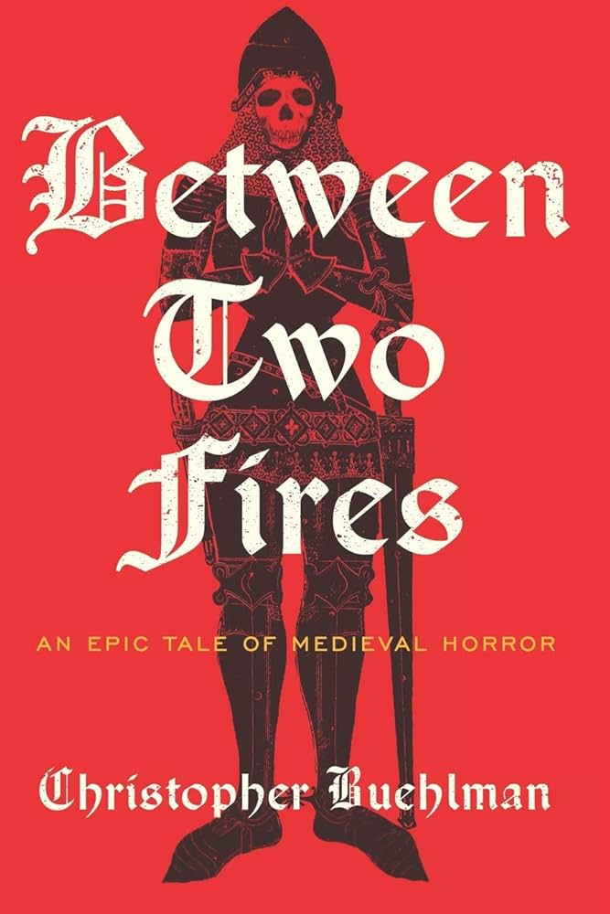
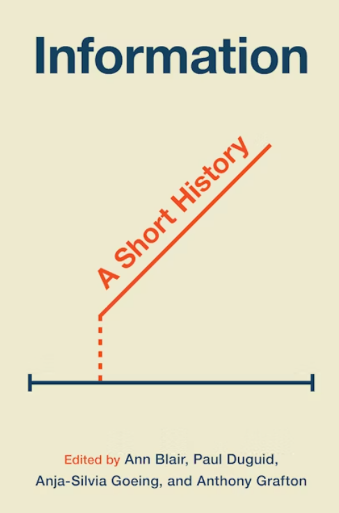
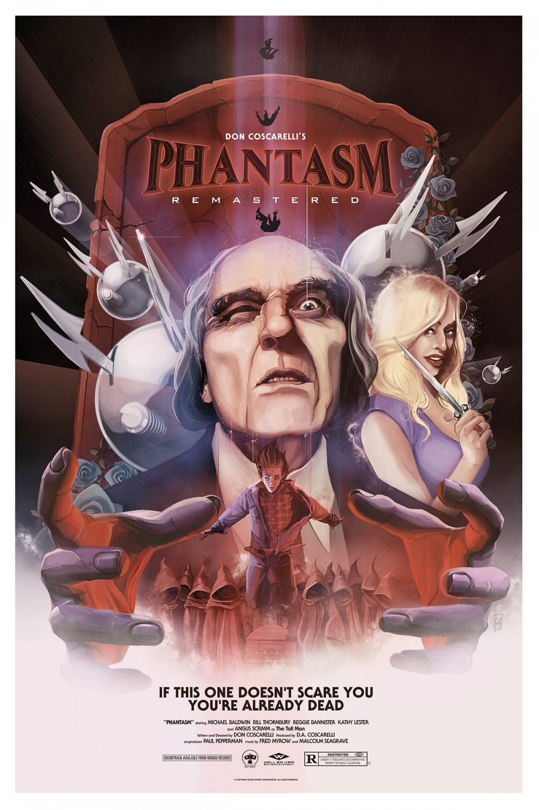

flowchart LR
subgraph RLSystem["RL System"]
agent["Agent"]
exp["Experience Buffer"]
end
subgraph DualSystem["Dualformer"]
fast["Fast Path"]
slow["Slow Path"]
trace["Trace Processing"]
end
subgraph Environment["Environment"]
state["State Space"]
reward["Reward Signal"]
end
agent --> state
state --> reward
reward --> agent
agent --> exp
exp --> trace
trace --> fast
trace --> slow
fast --> agent
slow --> agent
classDef rl fill:#bbf,stroke:#333,stroke-width:2px
classDef dual fill:#fbb,stroke:#333,stroke-width:2px
classDef env fill:#bfb,stroke:#333,stroke-width:2px
class RLSystem rl
class DualSystem dual
class Environment env
Reading
Books
Recently Finished

I just finished Christopher Buehlman’s Between Two Fires. This was a really fun one - a bit longer than I usually go for but it was highly recommended. The two most dominant personalities in the book reminded me a lot of my favorite beats in Game of Thrones - namely the dynamic between the Hound and Arya Stark. Atmospherically wonderful, and the way the monsters are written reminded me of two of my favorite projects of the past few years, Aesop Rock’s Spirit World Field Guide and John Langan’s The Fisherman. If you’re into horror, Between Two Fires might be my top recommend right now.
Loved this book.
Currently Reading
Information: A Short History

I picked this up because Ben Recht’s Patterns Predictions and Actions was availabe at a steep discount on the Princeton University Press website (sidenote: pick this one up - it’s excellent). I started reading it while waiting for my next horror story to come in the mail - but it’s on pause for the rest of October
Small Town Horror by Ronald Malfi
I spent a few hours scouring Amazon for something to read - this seemed fun and in the vein of what I was after. It’s also a little longer than I’m usually into - we’ll see how I’m feeling at the end of the month. My initial impression is that this one might not be for me, but I try to get at least halfway through everything.
You can find me on StoryGraph if you want to connect over any of these.
Papers
Switchback Price Experiments with Forward-Looking Demand
I’ve been going down a bit of a dynamic pricing rabbit hole - something about spending time clothes shopping on ebay and book shopping on Amazon has me thinking about how hard it is to get pricing right. My last blog post covers some early thoughts with simulations, and I’ve spent some time poking around Arxiv to see where dynamic pricing is right now. There’s some really nice theoretical work out this week from a research group at Stanford Wu, Johari, Syrgkanis, and Weintraub’s Switchback Price Experiments with Forward-Looking Demand - they prove that standard two-price experiments cannot identify the true demand gradient in a simple setting with forward-looking consumers while a three-price design can provide unbiased estimates. The simplicity of the environment makes me skeptical that a structural implementation of this model would truly be ‘unbiased’ – the estimation here is likely too generous to consumers who are often more myopic than modeled … so I’d imagine that the contours estimated under this approach yield higher elasticities than we’d see in practice. I’ve got some simulation work thinking about this too - my practical OR experience is more in the cost-min and efficiency maximizing spaces, and in grad school the focus was more on equilibrium outcomes than these sort of pricing strategies. I’d like to see what this looks like with (1) myopic consumers, (2) an entry threat, and (3) inventory constraints.
Key Takeaways
- Clean identification result that provides useful bounds on demand elasticity
- Novel solution to a fundamental measurement problem, even if assumptions about consumer behavior are strong
- Three-price design is simple enough to actually implement, unlike most theoretical solutions to strategic consumer problems
- Smart positioning at intersection of economics and operations research
- Could be extended to incorporate competing firms and inventory constraints, though that might break some of the nice theoretical properties
The Cost of Regulatory Compliance in the United States
I also spent some time thinking about compliance - in particular Bombardini, Trebbi, and Zhang’s Measuring the Costs and Benefits of Regulation, and Trebbi and Zhang’s The Cost of Regulatory Compliance in the United States. Broadly, the former outlines where we’re at in terms of evaluating the impact of regulation while the latter implements an interesting method that blends O*Net data with employment data outlining on-the-job activities, identifying tasks that are regulation-related (like “evaluate applications for compliance” or “monitor adherence to safety standards”), figuring out what percentage of each occupation’s time is spent on regulatory tasks, and then calculating what percentage of a company’s total wage bill goes to regulatory compliance. They argue that the cost of regulation exhibits a U-shaped relationship with regulatory costs - medium-sized companies spend the highest percentage on compliance.
[They] observe that over time, the inverted-U shape relation between RegIndex and firm size became stronger. In particular, much of the changes in RegIndex (the authors’ derived measure of the percentage of an establishment’s total labor spending ascribed to performing regulation-related tasks) come from firms with a medium and high level of employment, while there is little change in RegIndex for small firms. Importantly, this enhanced inversed-U relationship between RegIndex and size maps to a greater average log change in RegIndex for larger firms
This suggests that neither really small companies (who might fly under the radar) nor really big ones (who can achieve economies of scale in compliance) bear the heaviest regulatory burden. From an identification perspective, the authors employ two main identification strategies:
- A series of event studies/diff-in-diff around major regulatory changes, like:
- Credit CARD Act of 2009 affecting credit card issuers
- Energy Policy Act of 2005 and subsequent re-regulation of oil & gas
- Dear Colleague Letter of 2011 affecting colleges
- ACA affecting hospitals
- A shift-share instrument approach to separate enforcement from regulatory requirements. They:
- Measure regulatory requirement changes via new regulations from each agency
- Measure enforcement changes via changes in regulatory-related employment at agencies
- Create Bartik-style instruments based on industry exposure to different agencies
The event studies seem decent for validation - they show RegIndex moves in expected directions when regulations change. Their measure also captures both increases AND decreases in regulation, but I’m not super convinced by their causal claims about effects on firm size distribution. The inverted-U shape in regulatory costs by firm size is descriptive, and while they try to use their instruments to understand whether it’s driven by enforcement vs requirements, there are still lots of potential confounders. For instance, mid-sized firms might have different business models or operate in different sectors that require more compliance regardless of firm size per se.
I didn’t have high hopes for this paper when the first hit on Google was a writeup by the authors hosted by Cato, but it was at the very least interesting.
Key Takeaways
- Key contribution is new measurement approach: using actual labor allocation data to measure regulatory compliance costs
- Find mid-sized firms (~500 employees) bear highest relative regulatory burden
- Identification comes from regulatory event studies and shift-share design
- Main limitations are potential overestimation of compliance time and missing non-labor costs
- Validates well against known regulatory changes but causal claims about firm size effects remain uncertain
Dualformer: Controllable Fast and Slow Thinking by Learning with Randomized Reasoning Traces
The title rage-baited me. Meta’s new Dualformer: Controllable Fast and Slow Thinking by Learning with Randomized Reasoning Traces develops a training approach motivated by Kahneman’s two systems theory - which is, to me, basically the thinking man’s evolutionary psychology: widely held as false by academics active in the field, but digestible enough that everyone loves citing it. Paul Glimcher has some fantastic lectures that break down why the evidence just doesn’t support the two-systems model:
The actual technical meat is interesting despite the motivation: given training data of successfully solved tasks (think mazes or math problems) that includes all solution steps, selectively chop off pieces that aren’t crucial for finding the answer. This pruned version simulates the “fast brain” while the complete solution process represents the “slow brain.”
It’s fine. But honestly, if you have that kind of training data, why not just train an RL agent? The requirements are basically the same - you need tons of examples of successful problem-solving - but RL gives you a more principled framework for learning optimal behavior.
There might be something interesting in combining an RL agent with their architecture though. Imagine co-training the agent and the Dualformer so it learns both quick-and-dirty and careful-and-thorough approaches while the agent bumbles its way to solutions. The diagram above shows how this might work - the RL agent feeds experiences into the Dualformer, which learns both fast and slow solving strategies that can then guide future exploration.
The paper isn’t bad, and I’m sure it’s interesting and valuable to people smarter than me/folks who actually work on transformers day-to-day - the technical work, at a minimum, is solid. But they successfully annoyed me into reading something that over-promised and under-delivered by wrapping a fairly straightforward transformer training technique in cognitive science gift paper.
Key Takeaways
- Solid technical contribution wrapped in questionable cognitive science
- Probably should’ve just used RL
- Potential for interesting hybrid architectures (though that wasn’t their point)
Watching
TV Shows
My partner and I just finished Better Call Saul - a show that’s impossible for me to totally disentangle from Breaking Bad - but it has a distinct advantage for me over arguably the greatest show of all time: I actually liked the main character. In fact, I liked most of the characters in this show. I caught the first 2.5 seasons live, but just now circled back to actually watch/finish it, and I’m not sure what to expect from these guys other than perfection at this point.

I’ve been on Wellington Paranormal at bedtime, a marked jump from my annual October What We Do In The Shadows rewatch. WP is short and breezy, but very fun. Would recommend.
I think season 1 of The Sinner is up next. NBA will be bedtime TV for the foreseeable future. Pray for the knees of Paul George and Joel Embiid.
Movies
Zach Cregger’s Barbarian

My favorite of the week. Watched after searching for ‘creature features’ and honestly a little offensive to characterize in that way. It’s got Justin Long!
Nick Szostakiwskyj’s Black Mountain Side
The Canadian Terror
Don Coscarelli’s Phantasm

Absolute classic banger
Be my friend on Letterboxd :)
Tunes
New Bartees Strange, Samantha Fish cover of I Put a Spell on You. Lots of fun to be had around Halloween. Autumn always bring Jason Isbell back to my playlists, but this might be the first October where Cast Iron Skillet supplants Speed Trap Town in my yearning rankings. Unprecedented times.
Current Playlist
Don't wash the cast iron skillet
Don't drink and drive, you'll spill it
Don't ask too many questions or you'll never get to sleep
There's a hole inside you, fill itWorkin on
Wrapped a dinky model with an RL agent executing a dynamic pricing strategy. There are about a dozen things wrong with it, but it was a fun exercise. I wrote about the thought process and results here. I also spent some time playing with an old Mario RL agent I put together that combined human-in-the-loop with a DQN agent. Finally at a point where you can trade off with the agent after a 5-second lapse in human input. Unfortunately the agent is terrible at Mario and gets hit by koopas/goombas immediately. I might fiddle with these a bit more but I’m content where they’re at for now.
Next is to implement the switchback simulation with entry threat as mentioned above. Work work is work work - focused on GCP migration, learned a bit about the mechanics of some wonky HEDIS measures.
Links from da net
Ben Recht’s Cone Programming: I mentioned his book earlier, but his blog is also great. Love how he shows the progression from simple nonnegative orthants to second-order and semidefinite cones, highlighting the self-duality properties that make optimization over these sets work. For an operations research perspective on why this theory matters, check out this excellent guide to conic optimization by Letchford and Parkes - they go a bit more in-depth on the theory and discuss a few important applications.
Amazon is at it again — Jules Roscoe at 404Media discusses their latest legal tactic: claiming a constitutional right to hold anti-union meetings and refuse to post worker rights notices.
“It’s a ridiculous argument,”” said Seth Goldstein, a lawyer at Goldstein & Singla PLLC, who represents workers in unionization efforts. Goldstein previously represented Amazon workers who unionized in a Staten Island warehouse. “What I don’t understand is, the First Amendment is about government: the government can’t restrain free speech. In this case, are they really saying that the NLRB, as a government agency, is somehow limiting free speech? Constitutional rights are usually outside of the framework of private employers. I think it turns everything on its head.””
I feel like lots of folks are missing this point these days… This is part of a growing corporate assault on NLRB oversight, with SpaceX and Trader Joe’s making similar claims. For context on what they’re really fighting against, Luis Feliz Leon at LaborNotes has an excellent overview of the current wave of Amazon unionization efforts.
I’ve spent more time than I should have on The Ringer’s Fantasy Football Rankings the past few weeks.